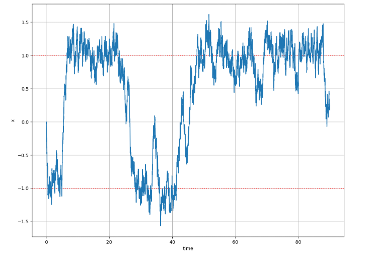
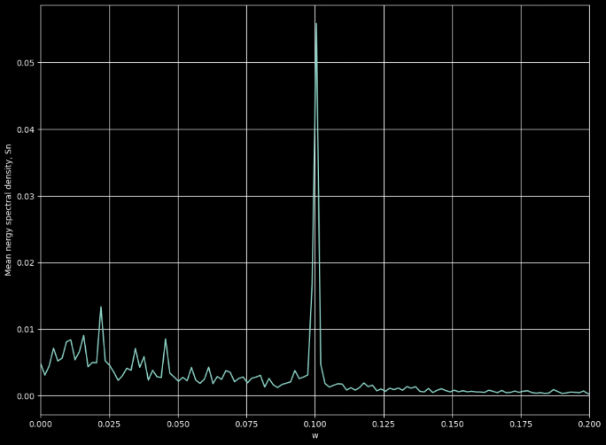
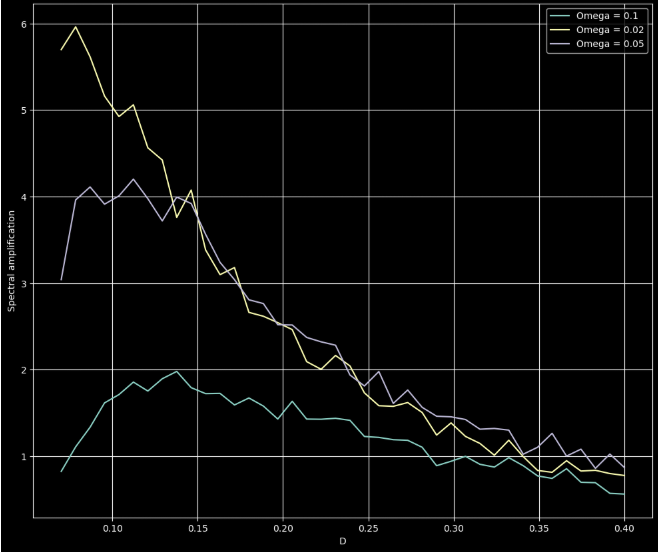

How noise can enhance signal detection in nonlinear systems
This project explores the phenomenon of stochastic resonance, where the addition of noise improves the detection of weak periodic signals in bistable systems. Simulations were performed using Python, with comparisons in both time and frequency domains using FFT.
Bistable system time evolution with noise generated through Wiener process:
Energy spectral density at difference angolar frequencies. Here we have a peak at 0.10, or f = 0.016 Hz
Spectral Amplification at different values of forcing frequencies. Ideal noise level is at the peaks of D
 Download Notebook